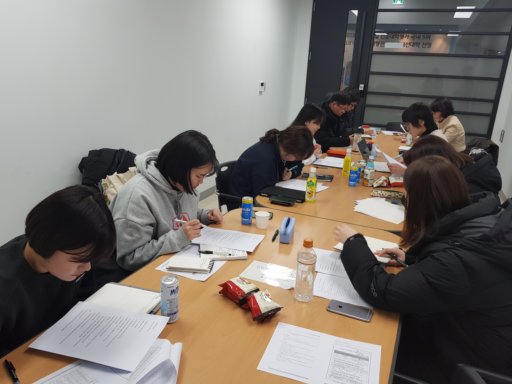

반갑습니다. 지난 시간에 춘천의 문제점에 대해 알아보았으니 이를 토대로 설민지 및 인터뷰 질문지를 작성해봅시다. 우리는 크게 시내지역, 외곽지역, 학생을 대상으로 조사를 진행하게 될겁니다. 그럼 각 대상의 특징들에 대해 알아봅시다.
먼저 시내 지역을 둘러봅시다. 주거 밀집 지역과 명동, 시외버스터미널, 춘천역, 남춘천역에 버스가 몰리는군요. 그럼 이 지역을 위주로 설문조사를 진행하면 좋겠습니다. 아, 명동은 춘천의 주요 환승 지역이군요. 좋아요. 시내 지역에서는 주로 가는 목적지와 그곳에 가는 목적, 버스 이용시 불편한 점을 집중적으로 조사해봅시다. 다음으로 외곽 지역을 살펴봅시다. 각 지역에서 시내와 가장 가까운 곳에 주거 밀집 구역이 형성되어 있습니다. 지역 주민 수에 따라 조사 지역을 선정하는 과정이 필요할 것 같네요. 외곽 지역에서는 하루에 버스가 몇 번 오는지, 목적지까지 시간은 얼마나 걸리는지를 중심으로 조사해봅시다. 마지막은 학생이군요. 학생 중에서도 고등학생을 대상으로 조사를 진행하는 것이 좋아보입니다. 춘천 내 기숙시설이 있는 학교를 제외한 나머지 학교를 직접 찾아가 등하교때 버스 이용 시 불편했던 점들을 물어보는 형식으로 진행합시다.
참, 중요한 사항이 빠졌군요. 우리는 버스 이용자를 대상으로 조사를 진행해야 합니다. 버스를 이용하지 않은 사람들은 버스의 문제점으로 모르니까요. 너무 당연한 얘기를 했나요? 그만큼 중요하단 말입니다. 아무튼 힘내서 열심히 해봅시다.
